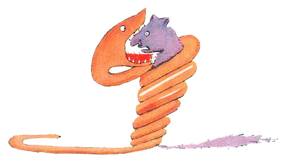
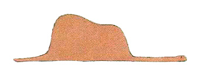

Once when I was six years old I saw a magnificent picture in a book, called True Stories from Nature, about the primeval forest. It was a picture of a boa which was swallowing an animal. Here is a copy of the drawing:
1
In the book it said: “Boas swallow their prey whole, they do not chew it. After that they are not able to move, and they sleep through the six months that they need for digestion.” I thought about it. And then I made my first drawing. My Drawing Number One. It looked like this:
I showed my masterpiece to the grown-ups, and asked them whether the drawing frightened them.
But they answered: “Frighten? Why can anyone be frightened by a hat?”
My drawing was not a picture of a hat. It was a picture of a boa which was digesting an elephant. But the grown-ups were not able to understand it. They always needed explanations. So I made another drawing: I drew the inside of the boa. This time the grown-ups could see it clearly. My Drawing Number Two looked like this:
The grown-ups advised me not to draw the boas from the inside or the outside, and study geography, history, arithmetic, and grammar. That is why, at the age of six, I stopped drawing. So I did not become a famous painter. I was disheartened by the failure of my Drawing Number One and my Drawing Number Two. Grown-ups never understand anything by themselves, and it is tiresome for children to explain things to them all the time.
So I chose another profession, and became a pilot. I flew over all parts of the world; and it is true that geography was very useful to me. Now I can distinguish China from Arizona.
I have met many people. I lived among grownups. I saw them intimately, and that did not improve my opinion of them.
When I met one of them who seemed clever enough to me, I tried to show him my Drawing Number One. I tried to learn, so, if this person had true understanding. But he—or she—always said,
“That is a hat.”
Then I did not talk to that person about boas, or forests, or stars. I talked to him about bridge,and golf, and politics, and ties.